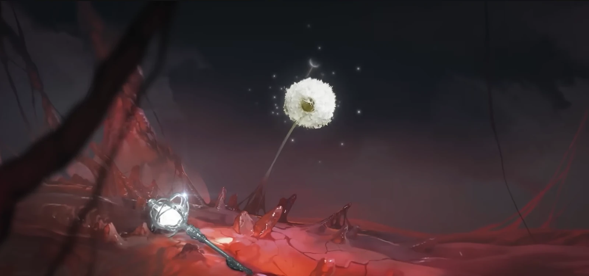
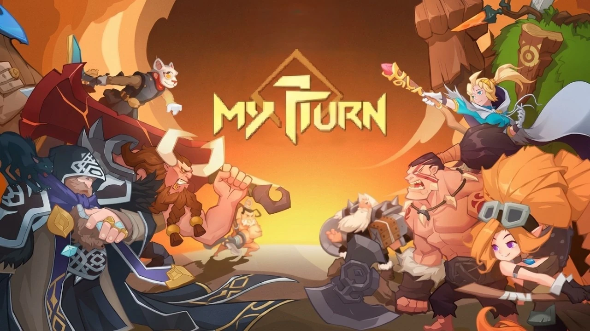
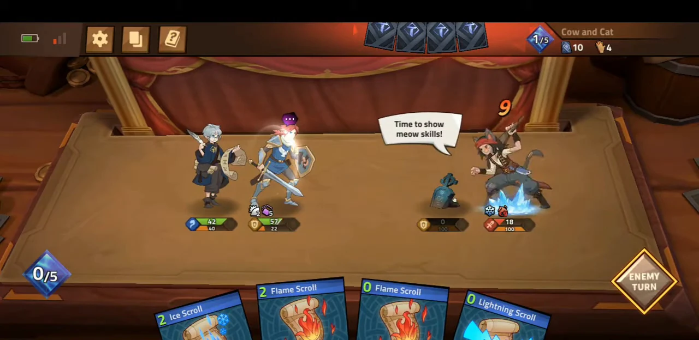
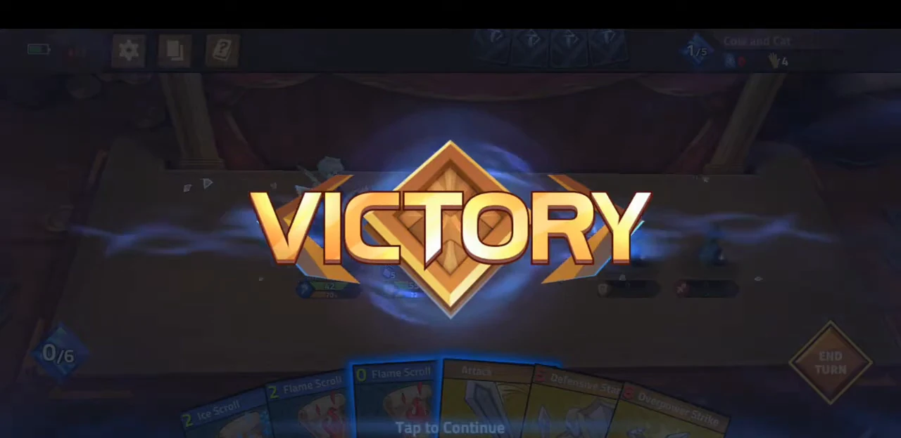
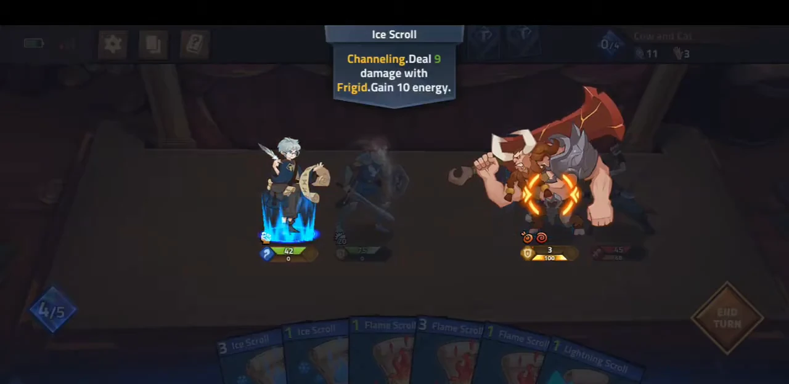
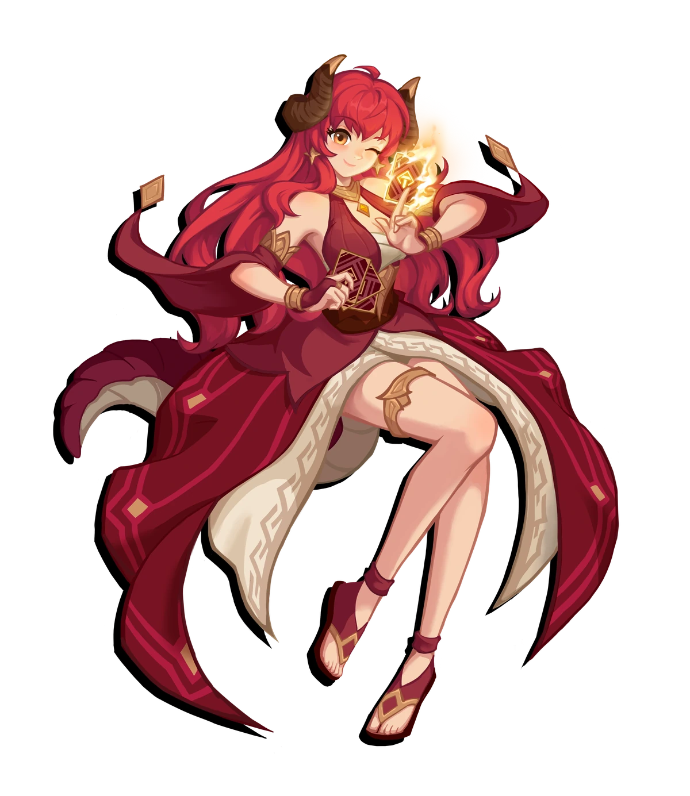
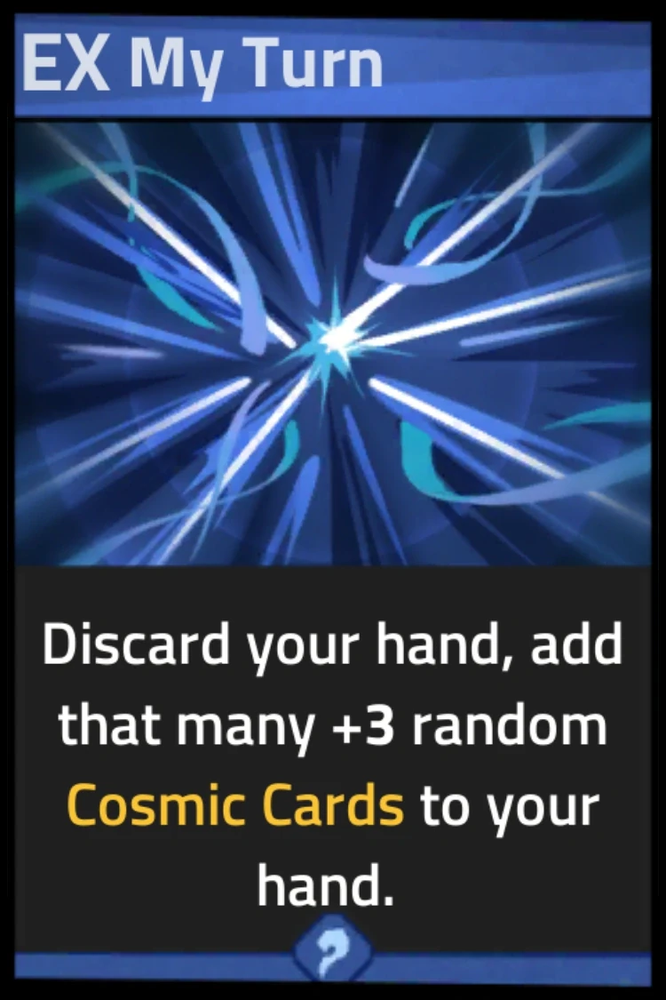
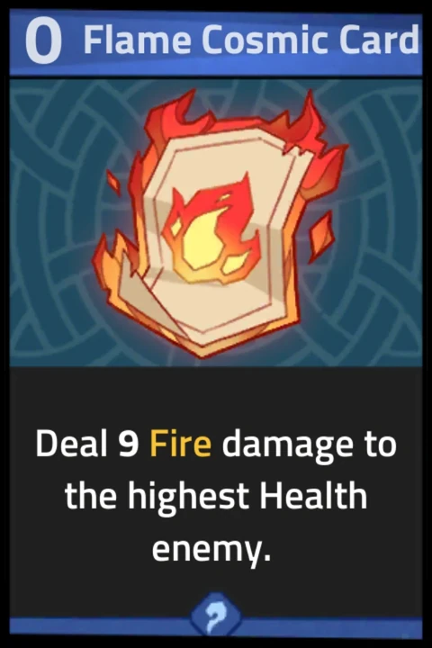
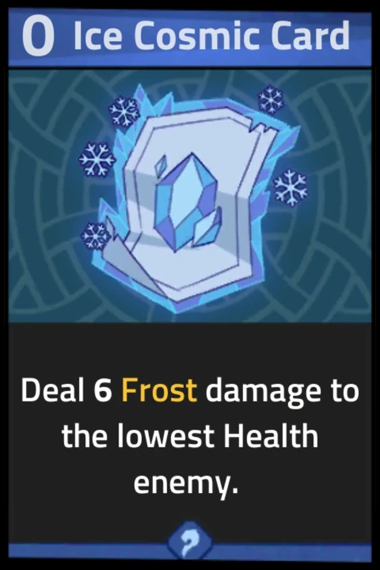
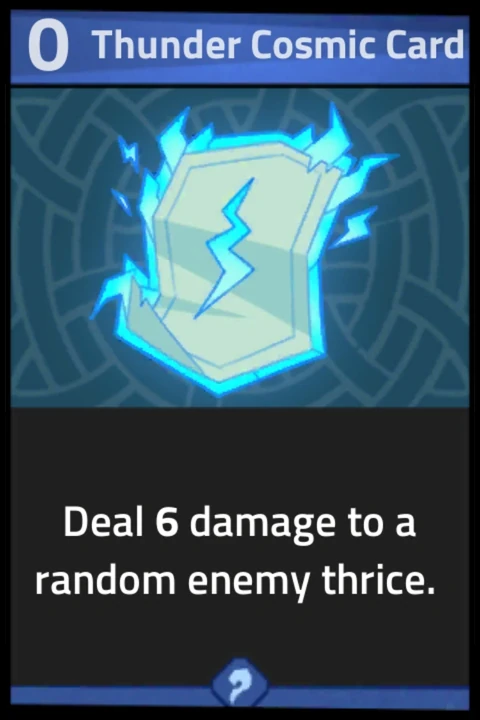

We build worlds worth shipping — games, and the systems, stories and sound that hold them up. Two titles in the pipeline. Both of them ours, both of them stubborn.
01 / The studio
Small studio. Long attention spans.
Nasage Productions is an independent studio. We are not a factory and we don't pretend to be one. We take an idea, sit with it far too long, and only put it in front of people once it has a pulse.
That means fewer releases and harder ones. It means the thing you play has been argued about by people who care what it feels like at minute forty, not just minute four.
-
M / 01
Worlds first
Setting, tone and rules before features. If the world doesn't hold, nothing on top of it will.
-
M / 02
Feel over spec
We tune for the hands and the ears. Numbers are a means; the moment-to-moment is the product.
-
M / 03
Ship it whole
No hollow launches. If it isn't finished, it isn't out — and it stays in the oven until it is.
-
M / 04
Stay independent
Self-directed, self-funded, self-critical. Nobody else gets to decide when we're done.
Project / Dome survival
REDRAIN

A reactor went into the Arctic Sea and came back wrong. Ten years of Alchemic Core had already replaced the old world's filth with something cleaner, and one containment failure in the Russian region was all it took to undo the good press.
The damaged core was sunk rather than destroyed. Under salt, cold and pressure it kept reacting — isotopes, engineered biomatter, and something in the deep that copies itself. The water turned the colour of an open wound, and then it rained.
You are a Recon Tactician, twenty years old, transferred into Sector D the morning the sirens start. RedRain is about the two wars running at once: the thing outside the wall, and the people who quietly decided you were expendable.
- FormatDome survival
- RoleRecon Tactician
- SettingExillium Dome
- StatusIn production
-
Record 01 — The Core
Cheap power, and a waste stream nobody wanted to discuss.
Isaac Ivan's engine mimicked a nuclear reaction without the same pollution, and the world rebuilt itself around it in a decade. The only dirty part was the plants that fed it radioactive material and rare minerals — so the plants went where the voters weren't.
-
Record 02 — The Frozen Sea of Blood
They sank it instead of killing it.
Emergency protocol dropped the failing core deep, far from cities and freshwater. It met freezing saltwater and deep-sea microorganisms, and the three of them made something new. The plumes spread slowly and stained the ocean red.
-
Record 03 — Chaos Record No. 0
The first fall was filed as a weather event.
Contaminated sea evaporated, rode the winds, and came back down as rain. People went outside to film the red sky. Then a woman collapsed, then dozens did, and then the ones who collapsed started changing.
-
Record 04 — The Domes
Built to keep the rain out. Kept the class system in.
Every nation threw up shelters. Inside, the old rankings reasserted themselves fast: upper sectors with stockpiles and soldiers, lower sectors with rationing and not enough beds. People bolted lean-tos to the outside wall because the inside was already full.
-
Record 05 — Ash
Sharp tongue, fire in both hands, a past she won't touch.
A wandering mercenary who picked the losing side on purpose and got branded a fugitive for it. Ash fights like the cause is personal, because it probably is — and when the Princess's Guard finally arrives, the air changes when the two of them share a room.
Once upon a time, the sky was bright and blue. The sun was warm and gentle; the wind, soothing and refreshing. People lived without fear, under heavens untouched by crimson clouds. Opening monologue — RedRain, Chapter 0
Project / Card duel
MY TURN REMAKE

My Turn: Infinite Magic Duel is a real-time card duel from Feiyu Technology HK Limited. Four heroes, their gear and eight attack cards make a twenty-six card deck; you draw five a turn, and everything you play resolves against a clock. It billed itself as TCG meets MOBA, and the pitch holds up — you are running a team and a hand at once.
We are rebuilding it from the ground up. The read stays exactly where it was: the half-second where you decide to hold a card or spend it. Everything around that gets replaced — a client that keeps up, feedback you can read at a glance, and a match where you fight the other player instead of the interface.
The game takes its name from one hero's ultimate, which tells you where Feiyu thought the drama lived: the moment you commit, with no take-backs. We are keeping that. The rest is ours to get right.
- FormatReal-time card duel
- Deck26 cards · 5 per turn
- OriginalFeiyu Technology
- StatusIn production


Card resolution

Hero art

The cards




Original game
Feiyu Technology HK Limited
My Turn: Infinite Magic Duel, its heroes and all in-game artwork shown here are the work of Feiyu Technology HK Limited, used as reference for our remake. Screenshots captured from the original Android build.
02 / How it gets made
Four passes. No shortcuts.
-
Every project starts as one sentence we can't stop repeating. If the sentence is weak, no amount of budget fixes it. We kill the weak ones here, before they cost anyone a year.
-
The world gets its physics — what a turn costs, what a jump burns, what a player can break. We prototype until it's fun with placeholder art, because pretty cannot rescue a loop that isn't.
-
Only now do we dress it. Interface, audio, lighting, the small feedback that tells your hands something happened. The polish is the design, not a coat of paint sprayed on at the end.
-
We test on real machines, on real sofas, with real patience. Then we release something we'd defend in public — and we stay with it after launch. Shipped is not the same as abandoned.
03 / Contact
Got a world worth shipping?
Collaboration · Publishing · Porting · Press